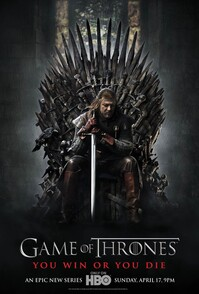
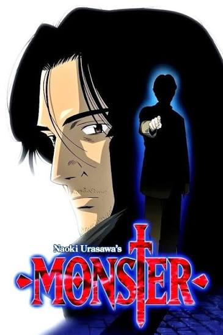
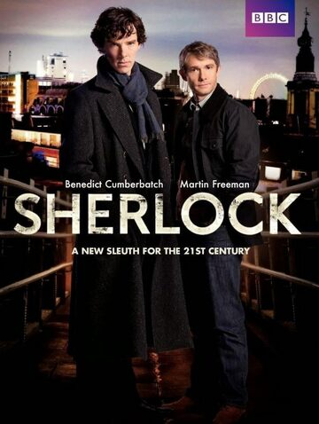

This entire page is going to be more recommendations of stuff you should do or media to consume
Reading
You really should read, A LOT, it's pretty fun once you get into it. Watch this TEDx Talk from Gaeun Lee about why you should read.
Hiking
It feels really nice to get to the top of a cliff or hill and see the incredible view after an arduous climb.
here are some real pictures from some of my hikes:
Televisioning or "Watching TV" as commoners call it
Watching TV is also quite fun, but only if you select the content you want to watch. And, don't go around watching reality TV or some other generic slop. Watch only the greatest shows and movies out there. Your time is too precious to be spent watching low-quality content.
With that aside, you should watch this stuff:
- Game of Thrones

- Monster

- Sherlock from BBC Wales
